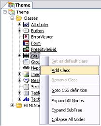

To create a new theme from within GeneXus, right-click on the Themes node in the Folder View (another way to create a new theme is through the New Object Dialog). You will see the following dialog box: In addition, you can specify a template from which the new theme inherits its property values. You can base the theme on a template so that it inherits the template property values. Otherwise, when the new theme is initialized, not all its properties will be empty by default; some properties will contain default values. For example, the new Apple theme has different property values than the default Modern theme. A new theme is made up by the following elements:
Note: You can also create a new Theme through the Save As option of the context menu on the object tab, at the top of the window. Configuring the ThemeNow, we will set up the properties of the "Grid" class. It must be taken into account that, in this case, some properties apply only if the grid has the BackColorStyle property set to a specific value. That is to say, unless the BackColorStyle property is configured as "Header" at control level, the LinesBackColor and the TitleBackColor will not be viewed as expected. Anyway, the grid property must be Report, to take the LinesBackColor, LinesBackColorEven, and TitleBackColor settings.
To create a new class from another one (derived classes), right-click on the parent class and select "Add Class."  We will create a "Grid1" class as a child of the Grid. This class automatically inherits the properties of the parent one. We will change the value of the "TitleForeColor" property of the "Grid1" class, so the difference with the parent class will be in this property.
|